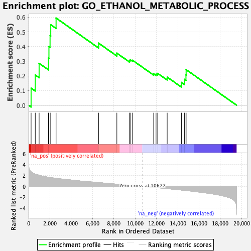
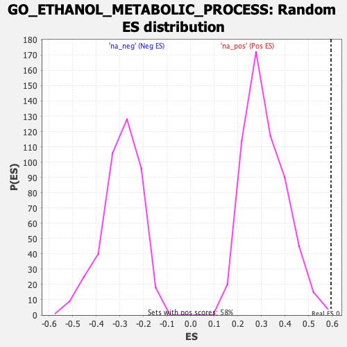

| | | Dataset | CK_basal |
| Phenotype | NoPhenotypeAvailable |
| Upregulated in class | na_pos |
| GeneSet | GO_ETHANOL_METABOLIC_PROCESS |
| Enrichment Score (ES) | 0.5947589 |
| Normalized Enrichment Score (NES) | 1.88778 |
| Nominal p-value | 0.0017331023 |
| FDR q-value | 0.10462084 |
| FWER p-Value | 0.964 |
Table: GSEA Results Summary

Fig 1: Enrichment plot: GO_ETHANOL_METABOLIC_PROCESS
Profile of the Running ES Score & Positions of GeneSet Members on the Rank Ordered List

Fig 2: GO_ETHANOL_METABOLIC_PROCESS: Random ES distribution
Gene set null distribution of ES for GO_ETHANOL_METABOLIC_PROCESS